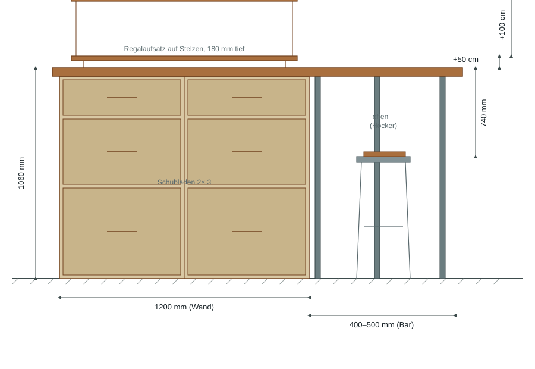
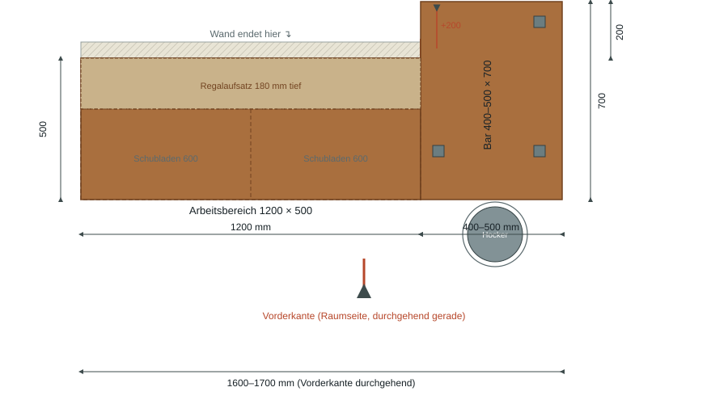
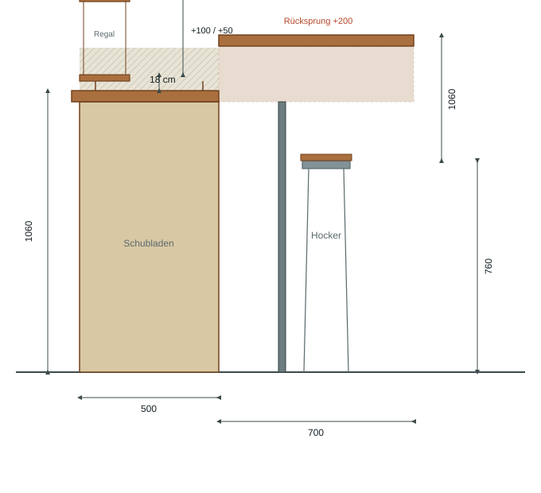
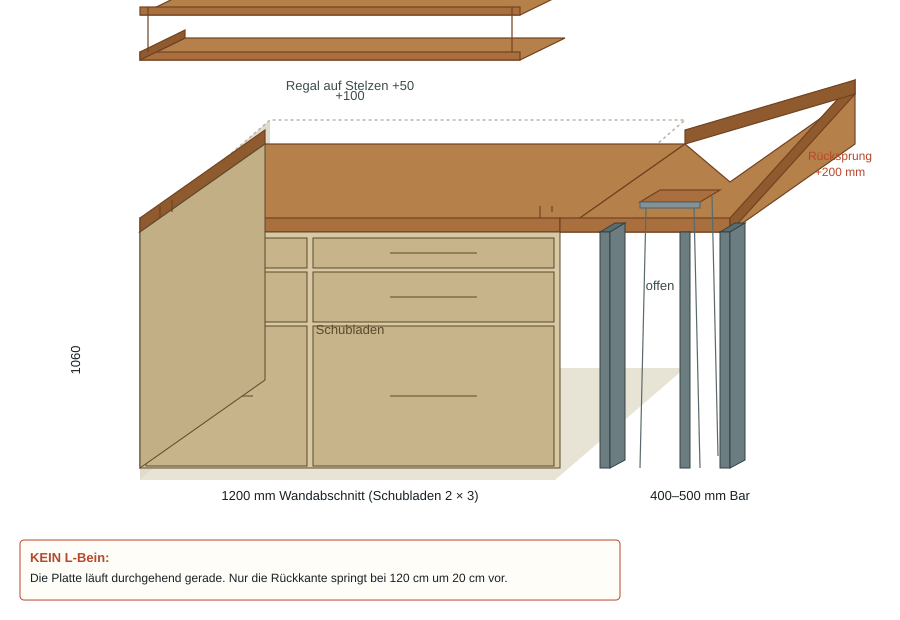

Frontansicht
1060 mm Arbeitshöhe; Regalbretter +50/+100

Küche / Bartresen
Eine durchgehende Massivholz-Arbeitsplatte in gerader Linie (160–170 cm). Links über 120 cm liegt sie an der Wand — darunter ein geschlossener Schubladenblock. Die Wand endet, die Platte läuft in derselben Richtung weiter und wird dabei 20 cm tiefer (Rücksprung an der Rückkante; die Vorderkante bleibt durchgehend). So entsteht eine offene Barzone mit Hocker. Ein schmaler Regalaufsatz steht auf Stelzen auf der Platte.
Kritisch: Kein L-Bein. Die Platte läuft in einer Linie. Nur die Rückkante springt bei 120 cm um 20 cm vor. Höhe 106 cm in beiden Sektionen — eine durchgehende Ebene.
Massstablich schematisch
Front: zwei 60-cm-Schubladenmodule, offene Barzone mit drei schlanken Stützen, Hocker. Draufsicht: Wand endet bei 120 cm, Rücksprung +20 cm, durchgehende Vorderkante. Seite: Tiefensprung 50→70 cm, Regalbrett 18 cm tief auf Stelzen. Isometrie: eine Platte, eine Höhe — kein L.
1060 mm Arbeitshöhe; Regalbretter +50/+100

Vorderkante gerade, Rücksprung bei 1200

Tiefenwechsel 500 → 700 mm

Eine Platte, eine Ebene — kein L

Mit der Maus oder per Touch drehen, zoomen, schwenken. „Platte ausblenden" macht die Unterkonstruktion (Schubladen, Stützen) sichtbar.
Front = Raumseite / Vorderkante durchgehend
Einkaufsliste
Zuschnittmaße in mm. Holz = Eiche massiv durchgehend (Empfehlung). Beschläge nach Qualitätswunsch austauschbar.
| # | Bauteil | Maß (L×B×H) mm | Anz. | Material / Bezug |
|---|---|---|---|---|
| Arbeitsplatte | ||||
| 1 | Arbeitsplatte links | 1200 × 500 × 40 | 1 | Eiche-Leimholz 40 mm |
| 2 | Arbeitsplatte rechts | 500 × 700 × 40 | 1 | Eiche-Leimholz 40 mm |
| Schubladenblock (unter Sektion 1) | ||||
| 3 | Korpus-Seiten | 1020 × 500 × 19 | 4 | Eiche-Multiplex 19 mm |
| 4 | Korpus-Böden | 561 × 480 × 19 | 4 | Eiche-Multiplex 19 mm |
| 5 | Mittelwand | 1020 × 500 × 19 | 1 | Eiche-Multiplex 19 mm |
| 6 | Rückwand | 1162 × 1020 × 8 | 1 | Sperrholz 8 mm |
| 7 | Schubladenfronten | 596 × var. × 19 | 6 | Eiche massiv 19 mm |
| 8 | Schubladenzargen | n. Beschlag | 6 Sets | fertige Schubkastensysteme |
| Beschläge | ||||
| 9 | Vollauszüge, Soft-Close | 500 mm, 45 kg | 6 Paar | z. B. Blum Tandem / Hettich |
| 10 | Möbelgriffe | 160 mm BA | 6 | Edelstahl / schwarz matt |
| Barzone (Stützen + Hocker) | ||||
| 11 | Stützen / Barfüße | 50 × 50 × 1020 | 3 | Eiche massiv o. Stahlrohr |
| 12 | Barhocker, Sitz 750 mm | Standard | 1–2 | Freiwahl |
| Regalaufsatz (auf Platte, Sektion 1) | ||||
| 13 | Regalbretter | 1200 × 180 × 20 | 2 | Eiche massiv |
| 14 | Seitenstützen Regal | 880 × 20 × 20 | 4 | Eiche massiv |
| 15 | Stelzen (Riser) | 40 × 20 × 20 | 4 | Eiche massiv |
| Elektro & Zubehör | ||||
| 16 | Schuko-Doppelsteckdose | Unterputz/Unterbau | 1 | mit USB-C (optional) |
| 17 | Hartöl, lebensmittelecht | 1 L | 1 | z. B. Osmo TopOil |
| 18 | Schneidebrett (loose) | 450 × 400 × 40 | 1 | Eiche massiv |